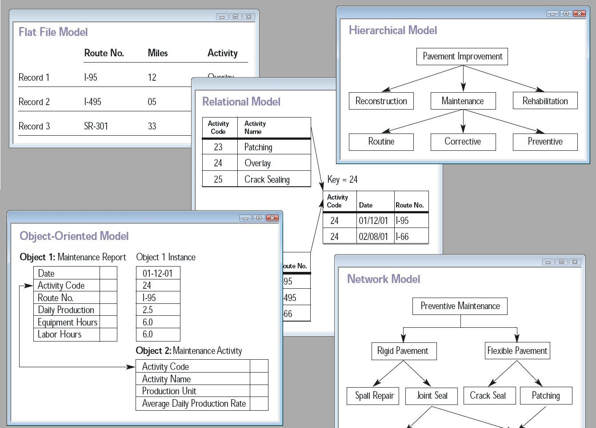

The first task of a database designer is to produce a conceptual data model that reflects the structure of the information to be held in the database. A common approach to this is to develop an entity–relationship model, often with the aid of drawing tools. Another popular approach is the Unified Modeling Language. A successful data model will accurately reflect the possible state of the external world being modeled: for example, if people can have more than one phone number, it will allow this information to be captured. Designing a good conceptual data model requires a good understanding of the application domain; it typically involves asking deep questions about the things of interest to an organization, like "can a customer also be a supplier?", or "if a product is sold with two different forms of packaging, are those the same product or different products?", or "if a plane flies from New York to Dubai via Frankfurt, is that one flight or two (or maybe even three)?". The answers to these questions establish definitions of the terminology used for entities (customers, products, flights, flight segments) and their relationships and attributes.
Producing the conceptual data model sometimes involves input from business processes, or the analysis of workflow in the organization. This can help to establish what information is needed in the database, and what can be left out. For example, it can help when deciding whether the database needs to hold historic data as well as current data.

Having produced a conceptual data model that users are happy with, the next stage is to translate this into a schema that implements the relevant data structures within the database. This process is often called logical database design, and the output is a logical data model expressed in the form of a schema. Whereas the conceptual data model is (in theory at least) independent of the choice of database technology, the logical data model will be expressed in terms of a particular database model supported by the chosen DBMS. (The terms data model and database model are often used interchangeably, but in this article we use data model for the design of a specific database, and database model for the modeling notation used to express that design).
The most popular database model for general-purpose databases is the relational model, or more precisely, the relational model as represented by the SQL language. The process of creating a logical database design using this model uses a methodical approach known as normalization. The goal of normalization is to ensure that each elementary "fact" is only recorded in one place, so that insertions, updates, and deletions automatically maintain consistency.
The final stage of database design is to make the decisions that affect performance, scalability, recovery, security, and the like, which depend on the particular DBMS. This is often called physical database design, and the output is the physical data model. A key goal during this stage is data independence, meaning that the decisions made for performance optimization purposes should be invisible to end-users and applications. There are two types of data independence: Physical data independence and logical data independence. Physical design is driven mainly by performance requirements, and requires a good knowledge of the expected workload and access patterns, and a deep understanding of the features offered by the chosen DBMS.
